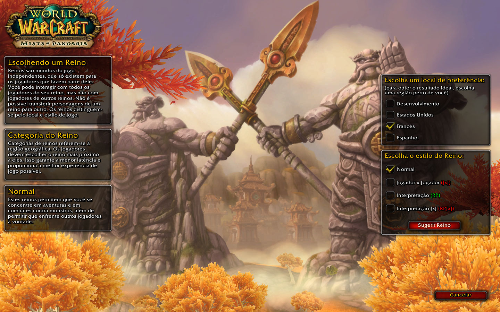
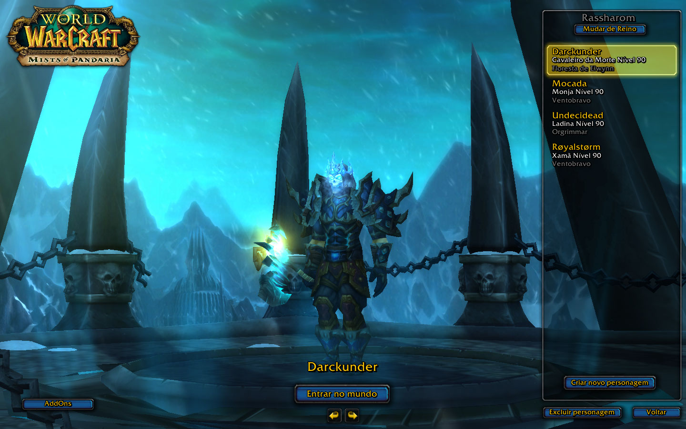

Indicações
Indicações
O que necessita de saber para começar a jogar:
- 1º Passo:
Faça o download do jogo no seguinte link (Download), de seguida o aplicativo vai pedir para onde
deseja guardar o ficheiro... Crie uma pasta chamada "Pandashan" ou "WOW" (como preferir), na qual ao abrir aplicativo, ele vai começar a instalar e a criar as pastas
necessárias para poder jogar!
- 2º Passo:
Crie a sua conta neste site: Criar conta
- 3º Passo:
Abra o aplicativo, caso não o tenha fechado (e se já tiver terminado o download) clique no seguinte botão:

- 4º Passo:
Depois de inserir o seu nome de conta e respectiva Password, aparecerá para escolher o reino desejado (selecione consoante o que demonstra abaixo):

Após ter selecionado pode clicar em "Surgir Reino"
- 5º Passo:
Já dentro da conta, (pode criar até 11 personagens) crie a sua nova personagem e depois Entre no Mundo, clicando <"ENTER"> (exemplo):
